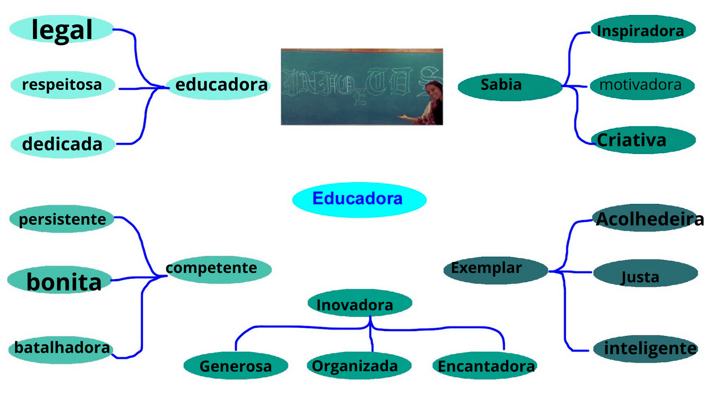
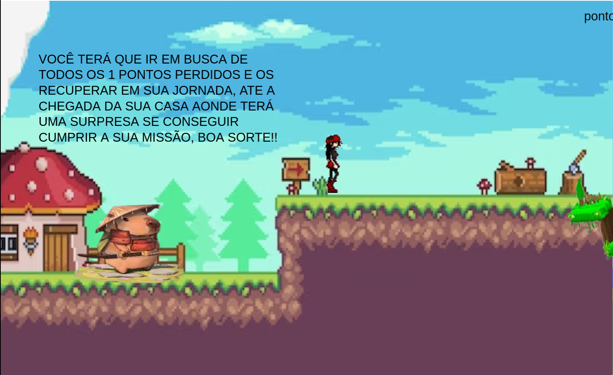

Formação Acadêmica: Bacharelada em Ciência da Computação e Pós graduada em Gestão de Projetos.
Do Que trabalhou: Sempre no setor de informática em instituição financeira, comercial, escola profissionalizante e ensino médio técnico.
Para quais turmas do técnico dá aula e quais as matérias:
1º TDS - Análise e Projeto de Sistemas.
2º TDS - Análise e Projeto de Sistemas, Banco de Dados e Programação Mobile.
3º TDS - Computação Gráfica, Jogos digitais e Programação no Desenvolvimento de Sistemas.
4º INFO - Internet e Programação Web e Banco de Dados (provisório).
.


Clique na imagem acima para jogar um produzido especialmente para a professora
Cristiane!
Mensagens dos alunos
"Querida Cris,
Desde que começamos a ter aulas juntos, fiquei impressionado não apenas com sua habilidade excepcional em ensinar desenvolvimento de sistemas, mas também com sua maneira de nos inspirar a aprender. Saiba que, por mais que muitos possam não gostar de ti, aqui você tem um que gosta. De longe, do técnico a melhor professora que já ministrou aula para mim. Em apenas alguns meses, você conquistou meu respeito e admiração tanto como professora quanto como pessoa. Sua educação, sua simpatia e tranquilidade, sua paixão pela programação é contagiosa, e suas aulas são sempre repletas de lições valiosas e desafios estimulantes. Obrigado por ser uma mentora tão incrível e por fazer uma diferença tão positiva em minha jornada educacional. Estou verdadeiramente grato por ter você como minha professora. Saiba que, por mais que talvez eu não siga a área da programação, seus ensinamentos eu levarei comigo para toda a vida, assim como levarei a sua pessoa no coração. Continue sendo essa mulher tão simpática e atenciosa que é, com essa essência tão tranquila.
Com sincera admiração,
Ass:Christopher Emanoel - 3° TDS.
Cristiane essa mensagem é para a senhora porque a vejo como uma ótima pessoa, uma professora incrível, com ótimos objetivos e perspectivas positivas em relação a nossa turma, conhecemos a senhora esse ano e já temos um carinho incrível, vamos levar seus ensinamentos do técnico para tudo que fizermos relacionado a tecnologia, computação gráfica é a matéria onde mais me identifico e gosto de aprender cada vez mais sobre
Ass: Vitória - 3° TDS.
Profª Cristiane Rodrigues
Queria te agradecer de coração por ser uma professora tão incrível. Suas aulas foram super divertidas e aprendi muito com você. Sempre admirei sua dedicação e jeito paciente de explicar tudo para uma sala tão teimosa. Obrigado por fazer a diferença na minha vida escolar e de meus colegas.
Ass:Ester Soares de Jesus - 2° TDS.
Prof Cristiane Rodrigues Ferreira.
Eu sou muito grato em ter você como minha professora pois você é uma pessoa que se preocupa com os seus alunos em questão de atividades, notas e está sempre disposta para nos ajuda quando precisamos de um conselho ou algo do tipo. Mesmo sendo uma pessoa séria existe um lado engraçado e sorridente por dentro, muito obrigado professora Cristiane por tudo.
Ass: Felipe Gabriel Paulo Arruda - 2°TDS.
Prof(aª): Cristiane
Eu agradeço suas ajudas nas aulas do técnico, acho você muito determinada a ajudar os alunos
Ass: Jesuelen - 2°TDS.
Querida Professora [Cristiane],
Espero que esta carta encontre você bem. Gostaria de aproveitar esta oportunidade para expressar minha profunda gratidão por todo o seu empenho e dedicação como nossa professora de análise projetada. Desde o início do curso, sua paixão pela disciplina e seu compromisso com nosso aprendizado têm sido verdadeiramente inspiradores.
Suas aulas vão muito além do ensino tradicional; elas nos desafiam a pensar criticamente, a analisar projetos de maneiras que antes não imaginávamos. Sua habilidade em explicar conceitos complexos de forma clara e acessível tem sido fundamental para o nosso progresso acadêmico.
Além de sua competência acadêmica, valorizamos profundamente sua disponibilidade para orientação extraclasse e seu apoio constante. Suas sugestões e insights têm sido preciosos não apenas para nossos estudos, mas também para nosso desenvolvimento pessoal e profissional.
Você não apenas nos ensina a teoria, mas também nos prepara para enfrentar desafios reais no campo da análise de projetos. Sua experiência e orientação são inestimáveis, e somos verdadeiramente gratos por termos uma mentora tão excepcional como você.
Por fim, quero agradecer por inspirar em mim um amor renovado pela análise projetada. Seu entusiasmo contagioso e sua abordagem prática têm sido fundamentais para meu crescimento neste campo.
Desejo-lhe todo o sucesso contínuo em sua carreira. Que você continue impactando vidas e moldando futuros profissionais, assim como fez comigo.
Com todo o meu carinho e gratidão,
Ass: José Lucas sena blasques coutinho - 2TDS.
Cristiane
Querida professora Cristiane Rodrigues Ferreira, queremos desde já agradecer pelo seu ensino e quero agradecer pela sua amizade também pois desde o dia que a senhora falou sobre o bullying não só eu mais muitas pessoas percebeu que a senhora não era só uma professora e sim uma amiga que podemos confiar e que pode conversar que a senhora vai estar aqui pra nos ouvir e uma coisa que eu falo a senhora pode contar comigo com a Louise e com a Maria por que do mesmo jeito que a senhora ajuda a gente nós queremos ajudar a senhora também então somos muito gratos pela sua amizade e também amamos a suas aulas pois sem elas não estaríamos tendo o conhecimento que estamos tendo agora, então te amamos muito professora.
Ass: Laerty Augusto - 2°TDS.
Para profª CRISTIANE RODRIGUES
Obrigada por nos ensinar tão bem e ter paciência com a gente sempre, obrigada também por ser nossa amiga e por aguentar nossos desabafos e dividir pensamentos conosco, você é uma professora incrível, obrigada por tudo, amamos você.
Ass: Louise Victoria Ricas Duarte - 2°TDS.
Obrigada por ter muita paciência com a gente, obrigada por ser nossa amiga e sempre guardar nossos desabafos, amamos você.
ASS:Maria Vitória Caetano de Oliveira. 2° TDS.
"Professora Cristiane, gostaria de expressar minha profunda admiração pelo seu trabalho. Sua dedicação e paixão pelo ensino são verdadeiramente inspiradoras. A maneira como você explica os conteúdos com clareza e paciência faz toda a diferença no nosso aprendizado. Além de ser uma excelente profissional, você sempre demonstra empatia e atenção com cada um dos seus alunos, o que torna suas aulas um ambiente acolhedor e motivador. Tenho muito respeito pelo seu compromisso com a educação e sou grato(a) por ter a oportunidade de aprender com alguém tão competente e carismática como você."
Espero que ajude!
Ass:João Paulo do Amaral - 4°Info.
 Clique na imagem acima para dar sua opinião sobre nosso projeto!
Clique na imagem acima para dar sua opinião sobre nosso projeto!